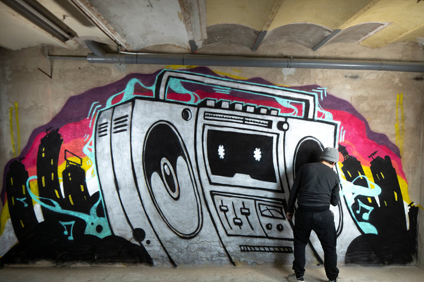
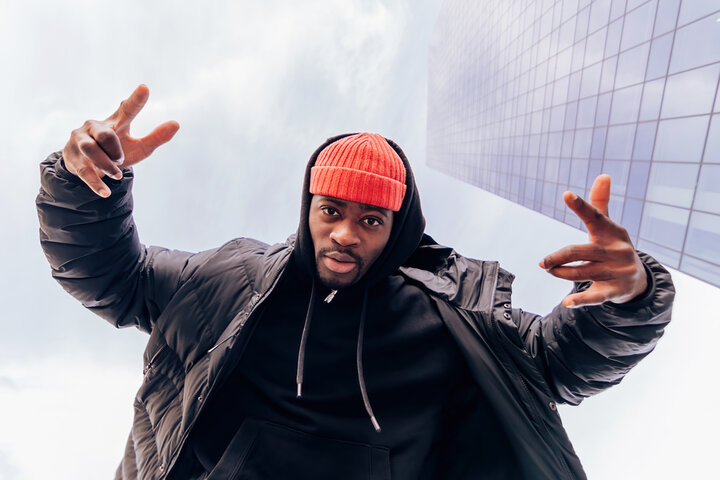

About Hip Hop
Hip-hop is an artistic and cultural movement that has influenced everything from fashion to politics. One major manifestation of hip-hop culture is its music.
Hip-hop is a genre of music most often characterized by a strong, rhythmic beat and a rapping vocal track. The genre originated in New York City in the 1970s as a cultural exchange among Black, Latino, and Caribbean youth and has grown into one of the most consumed genres of music in the United States. As a culture, hip-hop is built on four main pillars: DJing, rapping (also called MCing), breakdancing (usually called breaking or b-boying), and graffiti.
Since its inception, hip-hop has birthed dozens of subgenres, including trap, grime, gangsta rap, rap rock (or nu metal), crunk, chillhop, bounce, mumble rap, Latin hip-hop, and conscious hip-hop. Notable hip-hop artists and acts include DJ Kool Herc, Tupac Shakur, The Notorious B.I.G., The Roots, Nas, Jay-Z, Lil’ Kim, N.W.A, Nicki Minaj, Big Daddy Kane, Rakim, and Ice Cube.
Hip-hop music is a varied musical genre, but most hip-hop songs incorporate several common elements:
- Strong, rhythmic beat: A rhythmic beat is the strongest unifying factor of hip-hop music. It can be fast and aggressive or slow and relaxed, but it carries the song steadily forward and serves as a backdrop for vocal performance. Most beats in hip-hop songs aren’t simple drum lines—beat-making is a complex and varied art form that results in other songs and sounds.
- Vocals: The majority of hip-hop songs incorporate rapping as their main vocal style—a rhythmic, usually rhymed type of chant that interplays with the beat. Other vocal styles include singing, spoken word, autotune, and ad-libs.
- Breaks: “Break” is a term for long percussive periods in a hip-hop song—in the 1970s, DJ Kool Herc is credited with developing the concept of a break and encouraging dancing (called “breakdancing,” “breaking,” or “b-boying”) during these instrumental measures. Modern hip-hop songs often include breaks to hearken back to the genre’s roots or encourage dancing.
Source: masterclass.com
Origins
Early hip-hop music saw its roots in the 1970s in the New York City borough of the Bronx. It started as a collaboration among intersecting groups of Black, Latinx, and Caribbean American youth at block parties—community gatherings that featured DJs playing soul and funk music. NYC DJs like DJ Kool Herc, Grand Wizzard Theodore, Grandmaster Flash, and Afrika Bambaataa began to experiment with different techniques during parties, including longer percussive breaks (called “breakbeats'' or simply “the breaks”), turntable techniques, scratching, freestyle, and improvised vocals based on Jamaican “toasting.” They’re often credited as pioneers of modern hip-hop and rap music.
In 1979, hip-hop trio the Sugarhill Gang released what is now widely considered the first hip-hop record, “Rapper’s Delight,” which reached the top 40 on the US Billboard charts and propelled hip-hop into the spotlight—making hip-hop a full-fledged genre.
In the 1980s, hip-hop was in full force. Many different artists began bringing new ideas to the genre, including drum kits (especially the 808), more complex sampling, metaphorical rap lyrics, and broader collaboration with genres like electro music. The ’80s also saw hip-hop spread to an international audience, especially across the UK, Japan, and Australia. Notable songs included “The Message” by Grandmaster Flash and the Furious Five.
The late 1980s and early 1990s were the golden age of hip-hop, in which many performers enjoyed huge mainstream success while introducing major innovations with each new record. Major artists included Public Enemy, Tupac Shakur, The Notorious B.I.G., MC Hammer, Boogie Down Productions, Snoop Dogg, Nas, A Tribe Called Quest, and Big Daddy Kane. The era also saw the rise of gangsta rap, a subgenre that emphasized the lifestyle of inner-city youth and was characterized by artists like Schoolly D, Ice-T, and N.W.A.
Source: masterclass.com
Styles
Old School Hip Hop
Old School Hip Hop, the genre that laid the foundation for everything that followed, originated in the late 1970s and early 1980s. This subgenre marked the beginnings of hip hop music and culture, with pioneers like DJ Kool Herc, Grandmaster Flash, and Afrika Bambaataa leading the way. What sets Old School Hip Hop apart from its successors is its focus on live performances and block parties, where DJs would spin records and MCs would rap over the beats. The sound of Old School Hip Hop is characterized by its simple, danceable beats, and the use of turntables for scratching and mixing music. Breakdancing and graffiti art also played a significant role in shaping the hip hop culture during this era. The lyrics often revolved around everyday life, social issues, and having a good time, making the music relatable and easy to connect with.
Concious Hip Hop
Conscious Hip Hop emerged in the late 1980s and early 1990s as a reaction to the materialism and violence often associated with other hip hop subgenres. This hip hop subgenres focus is on thought-provoking lyrics that address social issues, political commentary, and personal reflection. Conscious Hip Hop aims to raise awareness and promote positive change, challenging listeners to think critically about the world around them. Some of the defining characteristics of Conscious Hip Hop include complex wordplay, intricate storytelling, and the use of diverse musical influences such as jazz, funk, and soul. This subgenre also tends to emphasize live instrumentation and a more organic sound, as opposed to heavily synthesized beats. Conscious Hip Hop has played a significant role in shaping the intellectual and creative side of the genre, demonstrating that rap music can be both entertaining and educational.
Alternative Hip Hop
Alternative Hip Hop emerged in the late 1980s and early 1990s as a response to the commercialization and mainstream success of hip hop music. This hip hop subgenres experimental approach to production and lyrical content, with artists often exploring unconventional themes is what it’s known for. As well as incorporating influences from other genres, such as rock, electronic, and world music. Some of the most influential Alternative Hip Hop artists include The Pharcyde, Beastie Boys, and MF DOOM. By pushing the creative boundaries of hip hop, these artists have made significant contributions to the genre’s evolution and helped to expand its appeal to a wider audience.
Boom Bap
Boom Bap, a subgenre that emerged in the late 1980s and early 1990s, is characterized by its hard-hitting, sample-based beats and gritty, street-smart lyrics. The term “Boom Bap” refers to the drum sounds typically used in the production of these tracks, with the “boom” representing the kick drum and the “bap” representing the snare. This hip hop subgenres heavily associated with East Coast hip hop and played a crucial role in shaping the sound and style of the New York rap scene. Iconic Boom Bap artists include Nas, Wu-Tang Clan, and Big L, who are known for their complex wordplay, storytelling, and unapologetic portrayal of urban life. Boom Bap remains a beloved and influential subgenre, with many modern artists incorporating elements of its sound into their own music.
Trap
Trap Music, which emerged in the early 2000s, is a subgenre of hip hop that originated in the Southern United States, particularly in Atlanta, Georgia. Trap Music is characterized by its aggressive, bass-heavy beats, rapid hi-hat patterns, and dark, often menacing lyrics that focus on themes of drug dealing, street life, and violence. Key players in the Trap Music scene include T.I., Gucci Mane, and Migos. Over the years, Trap Music has evolved and expanded beyond its regional origins, with artists like Future and Travis Scott incorporating elements of the subgenre into their own unique styles.
Source: unison.audio
Key Artists
Notorious B.I.G.
A pioneer of East Coast Hip-Hop, Notorious B.I.G. emerged as one of the greatest storytellers in rap history. With his smooth flow and compelling narratives, he delivered hits like “Juicy” and “Big Poppa,” becoming an icon of 90s Hip-Hop.
Tupac Shakur
Known for his powerful and socially conscious lyrics, Tupac left a lasting impact on Hip-Hop and activism. Tracks like “Dear Mama” and “Changes” showcased his ability to address pressing social issues through music.
Jay-Z
With an impeccable business acumen and lyrical prowess, Jay-Z became one of the most successful Hip-Hop moguls. From “Empire State of Mind” to “99 Problems,” his influence on the genre is immeasurable.
Nas
Nas is celebrated for his poetic lyricism and thought-provoking storytelling. His debut album “Illmatic” is hailed as one of the greatest Hip-Hop albums of all time, setting a standard for lyrical excellence.
Lauryn Hill
As a member of the Fugees and a solo artist, Lauryn Hill’s soulful voice and empowering lyrics resonated with audiences worldwide. Her album “The Miseducation of Lauryn Hill” earned critical acclaim and Grammy recognition.
Run D.M.C.
A pioneering group in the early days of Hip-Hop, Run-D.M.C. popularized the fusion of rap and rock. Their collaboration with Aerosmith on “Walk This Way” revolutionized the music industry.
Source: spitfirehiphop.com